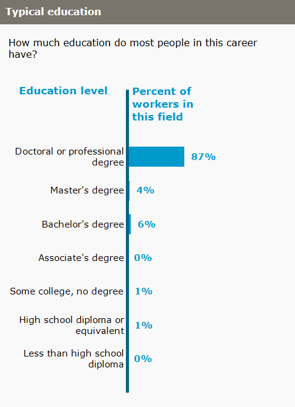

Education
Law is taught at the graduate level following the completion of an unrelated bachelor's degree. In America, the Americans Bar Association decides which law schools to approve for the purposes of admission to the bar. Law schools in the United States and Canada award graduating students a J.D. (Juris Doctor) as a professional law degree. In a handful of U.S. states, one may become an attorney (a so-called country lawyer) by simply "reading law" and passing the bar examination, without having to attend law school first, although very few people actually become lawyers that way.
Personally, I successfully completed the Pre-Law Summer Pre-College Program at Marist University, where I was instructed by Annamaria Maciocia esq. The course offered a comprehensive introduction to the field of law, providing hands-on experiences such as attending a live court hearing and conducting in-depth research on a Supreme Court case study. Additionally, I had the opportunity to explore various legal specialties, which not only broadened my understanding of the law but also made me a more well-rounded and knowledgeable individual in the field. I earned an A in the course, reflecting my dedication and engagement throughout the program.